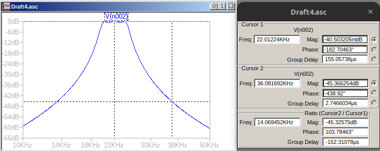
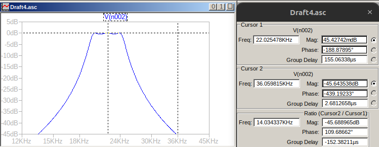

TP SEMANAL 6
Consigna
Se pide diseñar un filtro pasabanda que cumpla con la siguiente plantilla:
\(w_0=2\pi.22kHz\)
\(Q = 5\)
Aproximación Chebyshev con ripple de 0,5 dB
También se sabe que la transferencia del filtro debe ser:
|\(T(f_{s1})\)|=-16dB para \(f_{s1}\)=17kHz
|\(T(f_{s2})\)|=-24dB para \(f_{s2}\)=36kHz

Consignas de la actividad:
👉 Obtener la plantilla de diseño pasabanda normalizada
👉 Obtener la función transferencia normalizada del prototipo pasabajo que satisfaga el requerimiento del filtro pasabanda.
👉 Obtener la transferencia pasabanda normalizada
👉 Implementar mediante secciones pasivas separadas por seguidores de tensión activos.
👉 Activar las redes pasivas mediante la red propuesta aquí debajo y comprobar mediante simulación el comportamiento deseado.

Informe
Respecto al informe, se mantiene el mismo formato usado hasta el momento, informe en jupyter-notebook, simulaciones en python y LTspice. Se mantienen las recomendaciones para la inclusión de gráficas y resultados de la simulación, y se agrega:
Cada figura deberá tener una leyenda o un párrafo que haga referencia a ella
Al menos una sección donde:
se discutan los resultados obtenidos, factibilidad de implementación de la red, componentes sensibles, etc.
se informe las dificultades o problemas, si las hubiera
se destaquen los aspectos salientes de la resolución propuesta.
Manuscrito

[1]:
from schemdraw import Drawing
from pytc2.dibujar import dibujar_espacio_derivacion, dibujar_elemento_serie, dibujar_elemento_derivacion, dibujar_puerto_salida, dibujar_puerto_entrada
from pytc2.general import to_latex
d = Drawing(unit=4)
d = dibujar_elemento_derivacion(d, "V", with_nodes=False, sym_label="V_i")
d = dibujar_espacio_derivacion(d)
d = dibujar_puerto_entrada(d, voltage_lbl=('+', to_latex('V_i'), '-'), current_lbl=to_latex('I_i'))
d = dibujar_elemento_serie(d, "R", sym_label='R/a')
d = dibujar_elemento_derivacion(d, "R", sym_label="R/(1-a)")
d = dibujar_espacio_derivacion(d)
d = dibujar_elemento_derivacion(d, "C", sym_label="C1")
d = dibujar_espacio_derivacion(d)
d = dibujar_elemento_derivacion(d, "L", sym_label="Leq")
d = dibujar_puerto_salida(d, voltage_lbl=('+', to_latex('V_o'), '-'))
display(d)

Impedancia vista del circuito.
Transferencia:
[2]:
import scipy.signal as sig
from IPython.display import display, Math
import numpy as np
from pytc2.sistemas_lineales import tf2sos_analog, pretty_print_SOS, pretty_print_lti
N = 3
ALPHA_MAX = .5
z,p,k = sig.cheb1ap(N, ALPHA_MAX)
num, den = sig.zpk2tf(z,p,k)
sos_cheb = tf2sos_analog(num, den)
display("## Circuito Pasabajos")
display(Math("T(s) = " + pretty_print_SOS(sos_cheb, mode='omegayq', displaystr=False)))
#######################################################################################
Q = 5
w0 = .6264
a = 1.069/1.706
b = 1.143
num1 = np.array([0,0,0, w0/Q, 0])
den1 = np.array([0,0,1, w0/Q, 1])
num2 = np.array([0,0,b/Q**2,0,0])
den2 = np.array([1,a/Q,(2*(Q**2)+b)/(Q**2),a/Q,1])
# Multiply polynomials using np.polymul()
num = np.polymul(num1, num2)
den = np.polymul(den1, den2)
sos_cheb = tf2sos_analog(num, den)
display("## Circuito Pasabandas")
display(Math("T_{bp}(s) = " + pretty_print_SOS(sos_cheb, mode='omegayq', displaystr=False)))
display(Math("T_{bp}(s) = " + pretty_print_lti(num, den, displaystr=False)))
'## Circuito Pasabajos'
'## Circuito Pasabandas'
Simulaciones
Circuito RLC PasaBanda




Circuito Pasabanda con Activos


